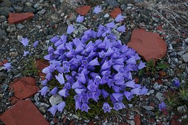

The original image:
Displayed in an ellipse:
With rounded corners:
As a thumbnail. Useful for creating a clickable image. It's better form to create a smaller version of the image and use that, rather than using the full-size original.
I got the image from pixabay.com, shown here as a clickable thumbnail: